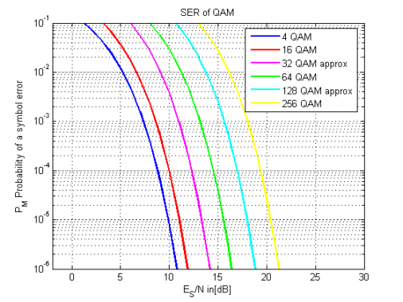

SER of QAM
Copyright 2007 Telecommunications Lab
ES_N_dB=[0:40]; ES_N_lin=10.^(0.1*ES_N_dB); p_sqrt4 = 0.5 * erfc(sqrt(ES_N_lin)); p_4= 1 - (1 - p_sqrt4).^2; %p_4 = erfc(sqrt(2 * ES_N_lin)) .* (1 - (0.25*erfc(sqrt(2 * ES_N_lin)))); p_sqrt16 =2*(1-(1/4))*0.5*erfc(sqrt((12/15)* ES_N_lin)); p_16= 1 - (1 - p_sqrt16).^2; p_sqrt64 =2*(1-1/8)*0.5*erfc(sqrt((18/63)* ES_N_lin)); p_64= 1 - (1 - p_sqrt64).^2; p_sqrt256 =2*(1-1/16)*0.5*erfc(sqrt((3*8/255)* ES_N_lin)); p_256 = 1 - (1 - p_sqrt256).^2; p_32_approx= 2 * erfc(sqrt((3*5/31)* ES_N_lin)); p_128_approx= 2 * erfc(sqrt((3*7/127)* ES_N_lin)); semilogy(ES_N_dB,p_4, ES_N_dB,p_16,'r', ES_N_dB, p_32_approx, 'p', ES_N_dB,p_64,'g', ES_N_dB, p_128_approx, 'pb', ES_N_dB, p_256, 'y','LineWidth',1.5); legend('4 QAM','16 QAM','32 QAM approx', '64 QAM', '128 QAM approx','256 QAM') title('SER of QAM') xlabel('E_S/N in[dB]') axis([-2 30 0.000001 0.1]) ylabel('P_M Probability of a symbol error') grid on;